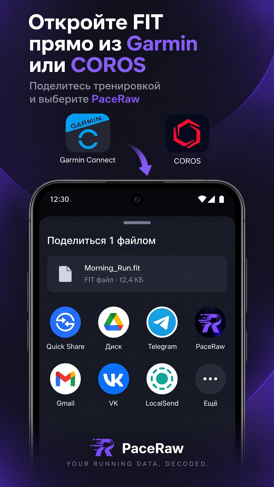
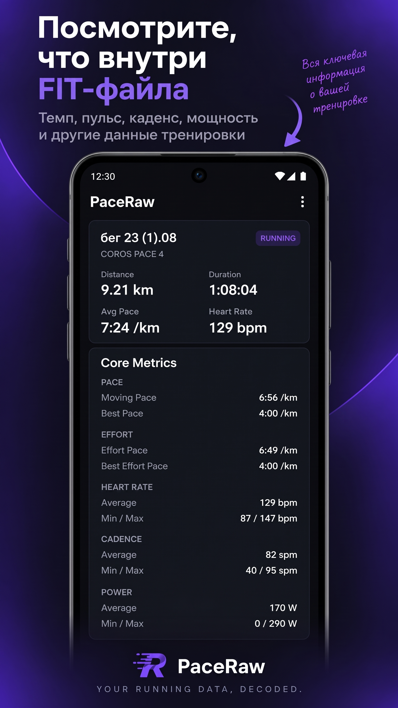
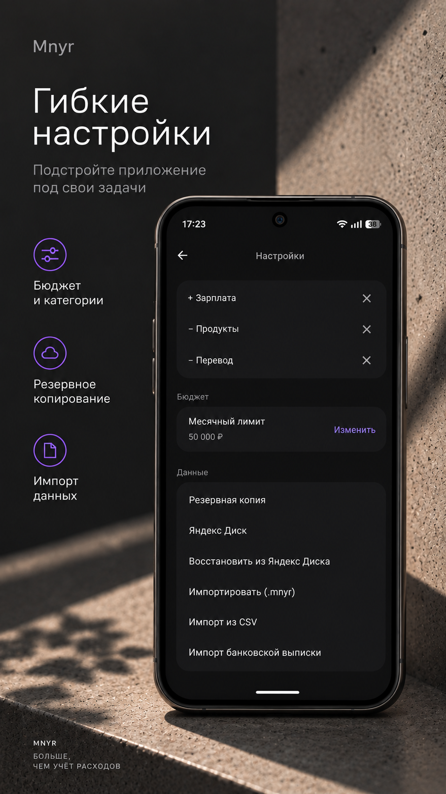

Декодирует бинарные FIT-файлы прямо на телефоне, нормализует данные тренировки, рассчитывает производные метрики и формирует компактный структурированный контекст для ChatGPT, Claude и Gemini.



Никаких бэкендов, облаков и аккаунтов. FIT-файл обрабатывается локально на вашем Android-устройстве и не отправляется на сервер PaceRaw.
PaceRaw рассчитывает производные метрики до передачи данных в AI: Moving Pace, HR Drift, Pace Consistency, Effort Pace Difference и сводку по Laps. AI получает уже структурированные числовые данные для дальнейшей интерпретации.
PaceRaw отбирает ключевые данные тренировки, рассчитывает производные метрики и формирует структурированный текст. AI получает компактный контекст с основными показателями, качеством данных и Laps.
Декодирование выполняется на Android, а нормализация, аналитика и подготовка AI-контекста — в общем Kotlin Multiplatform-коде.
Декодирование бинарного FIT-файла привязано к Android-слою. После декодирования данные проходят через FitNormalizer в commonMain, где превращаются в единую модель Workout. Затем WorkoutAnalyzer рассчитывает аналитику, а WorkoutAiPayloadBuilder и AiExportFormatter формируют текст для буфера обмена. PaceRaw сохраняет поддерживаемые developer fields и использует доступные developer metrics, включая Effort Pace.
Вы получаете структурированный контекст тренировки, готовый для вставки в любой AI-чат.
В приложении Garmin Connect или COROS нажмите «Поделиться» тренировкой и выберите PaceRaw.
PaceRaw локально декодирует FIT-файл, нормализует данные и рассчитывает доступную аналитику.
Нажмите «Скопировать для AI» и вставьте данные в любой привычный чат: ChatGPT, Claude, Gemini и другие.
Есть баг-репорт, предложение новой метрики или вопрос? Напишите напрямую разработчику.